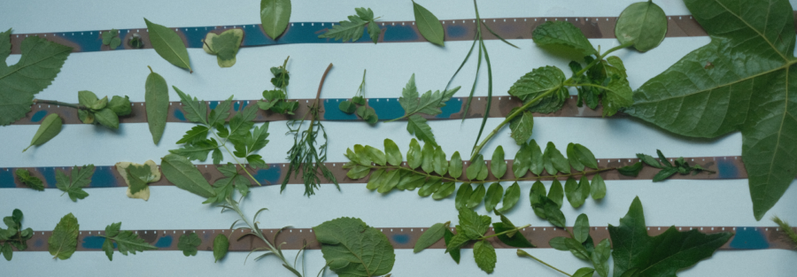

China-America Reel Ecology (CARE) Student Film Showcase
Please note that the CARE Showcase includes two programs, starting at 5:00 and 7:30 PM, presenting different work — stay tuned for an update on the run of show for each screening soon!
RSVP Screening 1 – 5:00 PM
RSVP Screening 2 – 7:30 PM
Generously funded by the Cyrus Tang Foundation, the China-America Reel Ecology (CARE) program is a unique global arts collaboration between Northwestern University and Tongji University (Shanghai, China), connecting students from both institutions and supporting their co-authored productions of innovative, cross-cultural, and ecologically focused cinema. The CARE program also receives support from Northwestern’s School of Communication, the Radio/TV/Film Department, and the Buffett Institute for Global Affairs.
CARE Filmmakers
Northwestern University: Amy Bin Tiong, Shawn Antoine II, Jackson Kehoe, John Xu, Blake Knecht, Irene Zhu, Maya Castronovo, Annalise Peterson, naakita f.k.
Tongji University: Ruby Wang, Abdulsalam Yahya Ebrahim, Jarvis Jia, Xiaoyi Xia, Sheryl Li, Tianyue Li, Jin Wang, Xuancheng Chen, Xu Yan